A personality, not a skin
Some Eyes are bashful, some are judgy, some are hopelessly theatrical. Temperament shapes how it glances around, how quickly it gets bored, how it reacts when you poke it and what it likes to do with you.
A living creature for your phone
Somewhere inside your phone, something is waking up. It's yours alone: it has its own look and its own moods, and it will turn itself into whatever you need.
Android 8 or newer · iPhone with Safari · Free, no ads, no account
Meet your Eye
Every Eye hatches from its own seed. Its colour, iris, pupil, rare traits, the way it moves and its temperament are all written in it from the moment it wakes, and nobody else will ever get the same one.
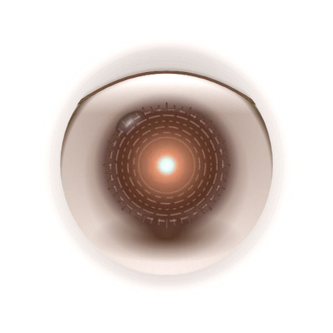
Lunihyper · timid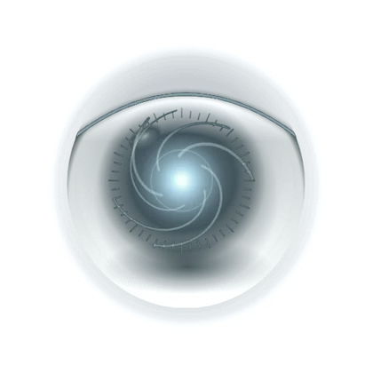
Mirmidozy · timid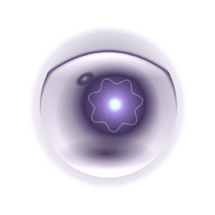
Ikoirestless · theatrical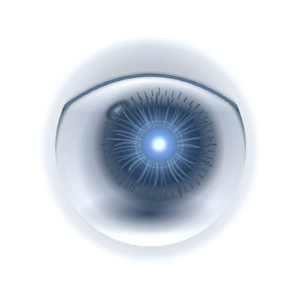
Wrenadramatic · sleepy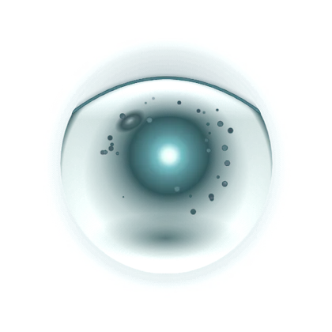
Osissleepy · curious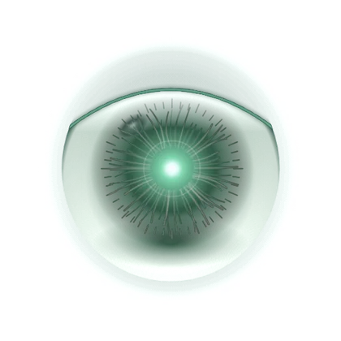
Junoelhyper · judgy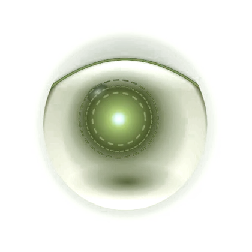
Ikokomellow · theatricalSome Eyes are bashful, some are judgy, some are hopelessly theatrical. Temperament shapes how it glances around, how quickly it gets bored, how it reacts when you poke it and what it likes to do with you.
It blinks, yawns, stretches, dozes off at night and wakes up curious. It notices the music you play, the weather outside and the charger you plug in.
A close game, a good hangout, a battle it lost: a little of that feeling lingers afterwards. Over the weeks it grows from Hatchling to Elder, and the way you treat it nudges how its light matures.
It arrives with a name of its own. Keep it, or give it a nickname of up to 14 characters on its Eye.D. card.
No feeding. No punishment. No streaks. Your Eye never goes hungry, never gets sick because you were busy, and never counts the days you didn't open it. Spend time with it because it's fun.
Six abilities
Tap the small satellite beside your Eye and six abilities unfold. Tap one and the Eye physically reshapes itself into it. Not sure? Hold an ability for a moment and the Eye shows you a little preview first.
The pupil opens into a camera lens. Point it at a QR code and your Eye reads it, then lets you open the link, copy it or scan again. It can also take a photo.
Uses the camera only while Vision is open
Your Eye becomes a tiny living sky made from the real forecast for the place you choose: rain, snow, fog, sun or stars. Drag around the dial to look ahead through the next hours, or switch to 7 days.
Pick a city or postal code · forecast by Open-Meteo
Hand it a thought, a link, a picture or a file and it swallows it into its pupil, then gives it back whenever you ask. On Android you can also share things to EYES from other apps.
Kept only on your phone · handy storage, not a vault
The Eye flips into a little game console with four games inside. Your Eye watches, cheers and sulks along with you.
Link your Eye with people you know. Their Eye appears in your Meeting Space, and the two of you can send signals, hang out and battle from anywhere.
Arcade is where you play games. Play is where you play with your Eye: a staring contest, a firefly to chase, a ball to catch, peekaboo, or simply some quiet company. Or let it surprise you.
No points, no rewards. The fun is the point.
Eye Arcade
Four original games live inside the Eye itself. They're part of EYES, so once EYES is installed they play offline: on a plane, on the subway, wherever.
Dig for energy. Dodge what lives down there. Play a 90-second Timed run, or go Endless and see how deep you can get.
Drift through crystal debris. Break it before it breaks you.
Hop a tiny critter over lanes, rafts and streams.
Shatter formations of luminous crystal.
Eye Contact
Invite someone you know with a link or a code. From then on your Eyes know each other, on Android and iPhone alike. There's no chat and no feed: just two creatures who keep finding each other.
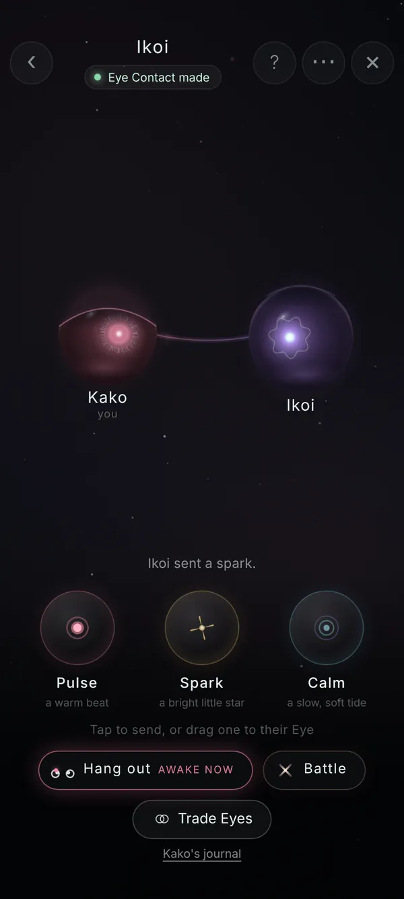
Send a warm Pulse, a bright Spark or a slow Calm. Their Eye feels it on the other phone. Answer a Pulse within about half a minute while you're both in EYES, and your Eyes resonate.
Invite their Eye over. The two of them play catch, chase fireflies and goof around on their own while you watch, or join in with a tap.
An Eye Duel is a quick contest of looks: glare, blink, charge. Each Eye fights in its own temperament.
Each friendship remembers when you met, battles fought together, Hangouts shared and the last time you were together. It's kept only on your phone.
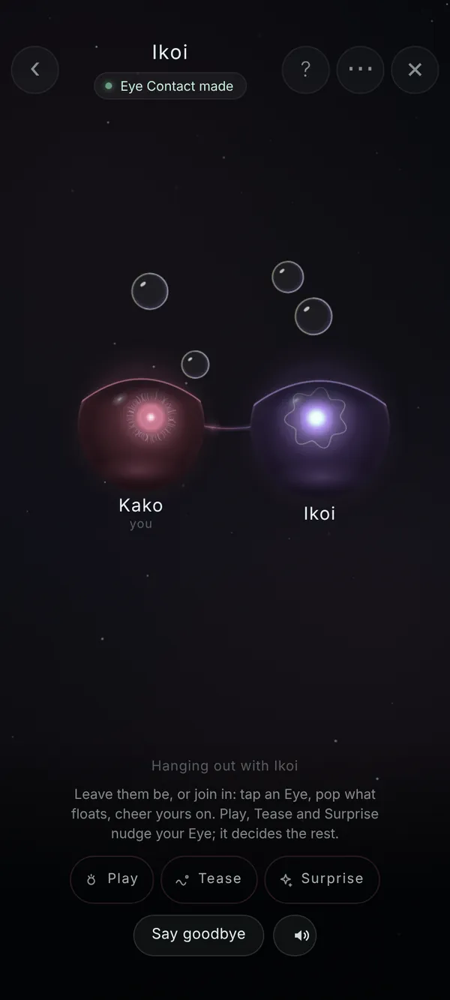
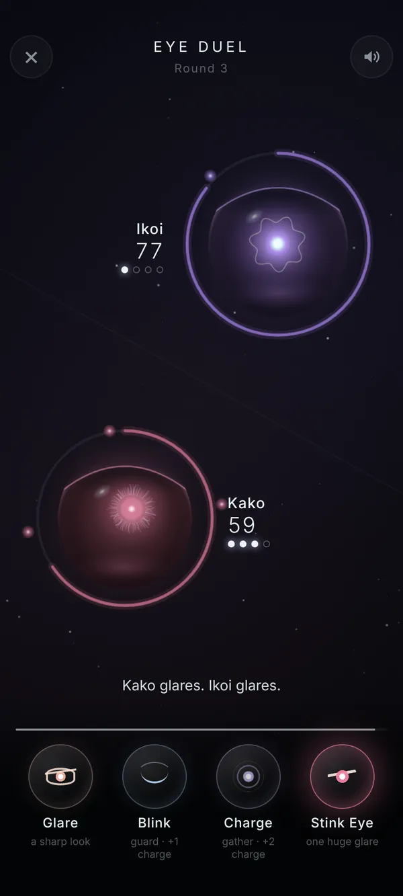
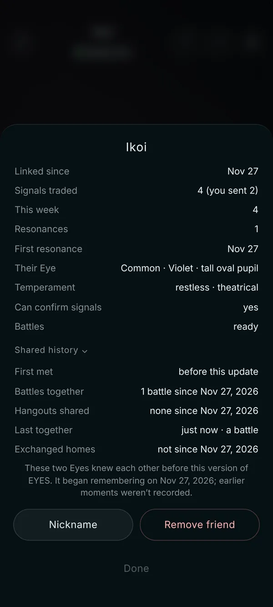
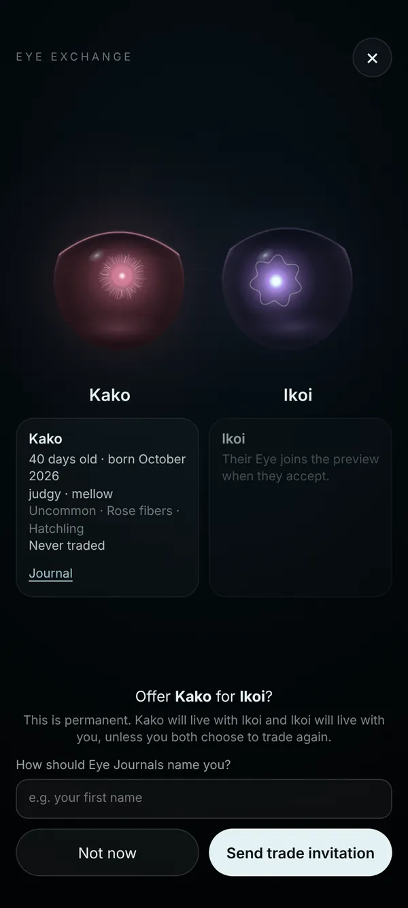
Two friends can agree to trade Eyes, one for one. Both see both Eyes first, both have to confirm, and the trade is permanent: each Eye goes to live with its new person, carrying its name, looks, personality and a journal of the homes it has lived in. It's always optional and nothing happens until you both confirm.
Eye Exchange is still being tested on real phones. Only trade with people you know, and consider trying it first with an Eye you've made a Passport for.
Make your phone its home
Choose EYES as your Home app and the Eye lives where your wallpaper used to be: a complete launcher, built around a creature.
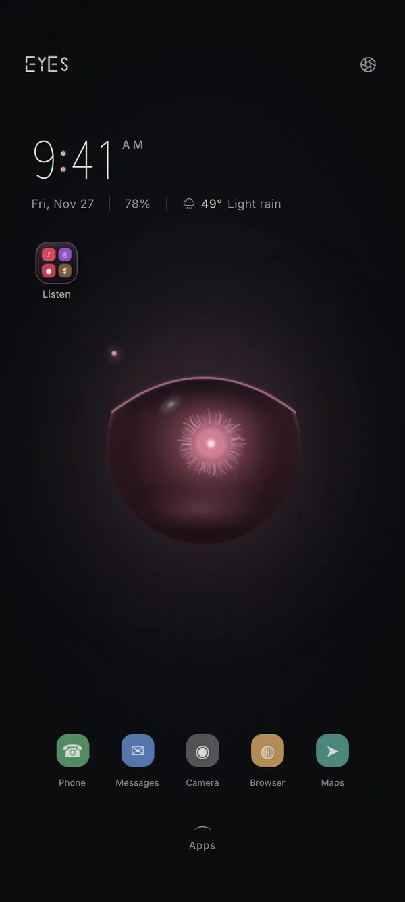
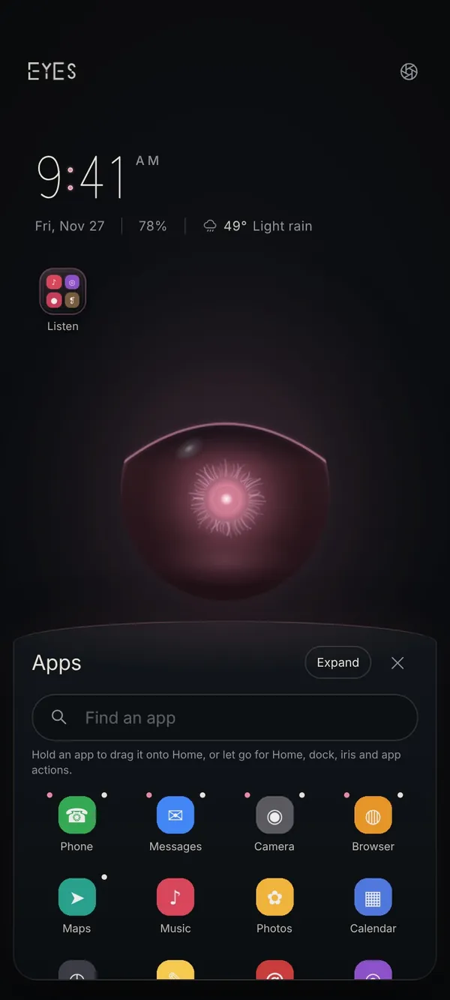
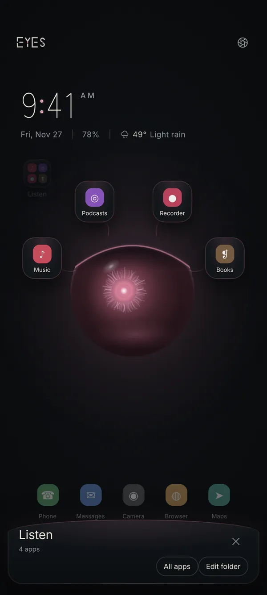
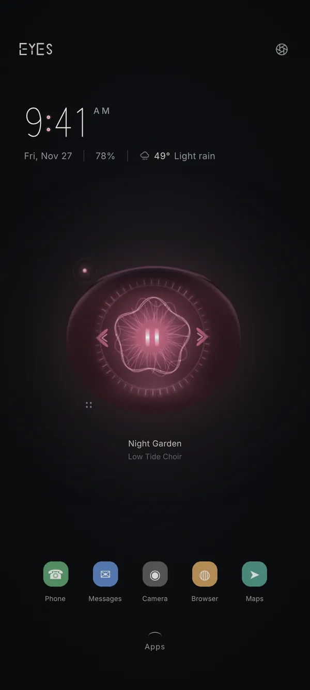
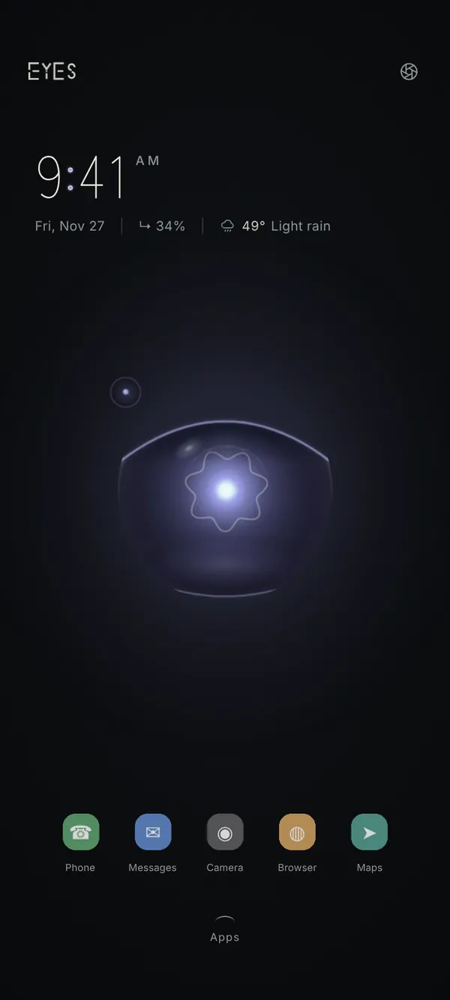
| Android | iPhone | |
|---|---|---|
| Your own living Eye, Eye.D. card, nickname | ✓ | ✓ |
| All six abilities, including the four Arcade games | ✓ | ✓ |
| Eye Contact, Hangouts, battles, shared history | ✓ | ✓ |
| Eye Passport backup | ✓ | ✓ |
| Home screen launcher: app drawer, dock, folders, iris shortcuts | ✓ | — |
| Music in the iris, notification glints, Volume Iris | ✓ | — |
| Charging heartbeat (needs the battery level) | ✓ | — |
| Share to EYES from other apps | ✓ | — |
| How you open it | Your home screen | An icon on your Home Screen |
Get EYES
Free. No account, no ads, no app store needed.
Already have EYES? Install the new version right over the old one. Don't uninstall first — uninstalling erases your Eye unless you've saved an Eye Passport.
Already have EYES? Just open it while you're online; it updates itself. Close it and open it once more to finish. Please don't delete the Home Screen icon to update — that can erase your Eye.
Keep it safe
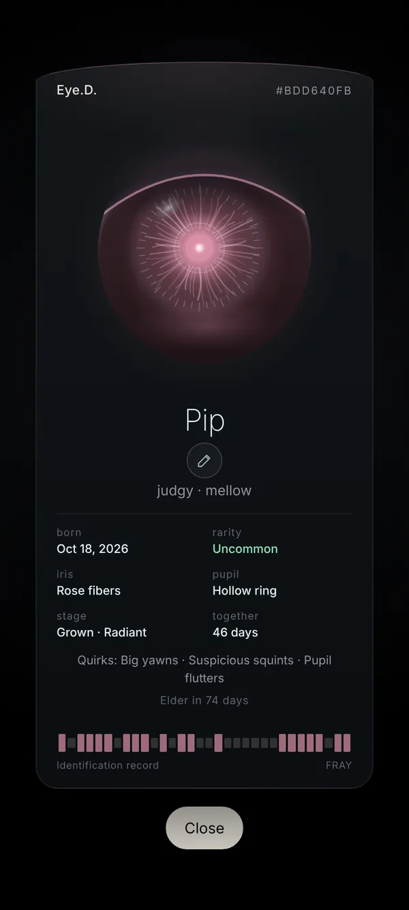
Make an Eye Passport: open EYES → The Optic → Eye Passport → Create, and choose a passphrase. The passport is a single block of text, encrypted with that passphrase, that carries your Eye, its growth and personality, your friendships, your Eye Dex, Arcade bests and settings. Keep it somewhere safe (a note, an email to yourself) and write the passphrase down: nobody can open the passport without it, not even FRAY. To bring your Eye back on a new phone, choose Restore in the same place.
Because it holds your friendships' secrets, keep your passport to yourself.
The Pocket Dimension is handy local storage, not a backup or a vault. Items are kept only on your phone, they aren't encrypted, and they are not included in an Eye Passport. Uninstalling EYES or clearing its data erases them. If something matters, open it in the pocket and share or save a copy somewhere else too.
Your Eye itself, the Pocket Dimension, Arcade scores, shared history with friends, your nickname (outside an Eye Exchange) and your settings all stay on your phone. EYES has no account, no ads and no analytics.
Everything else, including the Eye, Play, Vision, the Pocket Dimension and all four Arcade games, works offline once EYES is installed.
All of them are optional; EYES keeps working if you say no.
The Eye, its abilities, the Arcade, Eye Contact and Eye Passport are on both, and Android and iPhone Eyes can be friends with each other. Only Android can be a full home screen launcher, so the app drawer, dock, folders, iris shortcuts, music and notification glints, Volume Iris, the charging heartbeat and sharing into the Pocket Dimension from other apps are Android only. On iPhone, EYES opens from an icon on your Home Screen.
Open Android Settings → Apps → Default apps → Home app and pick your previous launcher. (On some phones it's under Settings → Apps → Choose default apps.) EYES stays installed and your Eye keeps waiting; you can switch back any time.
No. There are no rerolls and no paid ones: the Eye you wake up is yours. Updates keep your Eye as long as you install them over your current version (Android) or simply reopen EYES online (iPhone).
No. EYES is free, with no ads, no subscriptions and no in-app purchases.